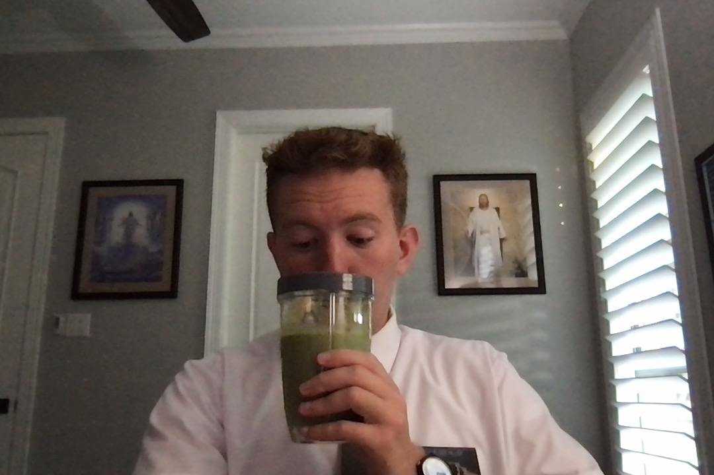

I gotta tell you guys, I am so so happy. Mission life is really the best. So I've been called to serve in the Papeete Tahiti Mission!!!For the next 9 weeks of my life I am at the at home MTC, or the At home Missionary Training Center, learning more about my faith, French, and Tahtiian language skills. I wake up early, I study, and then I study some more, and then I study with some people, and then in between it all I eat. Probably too much ;) I'm just trying to learn all I can in Tahitian and French before I leave, oh and Kiana and I are playing board games!
For the next 9 weeks of my life I am at the at home MTC, or the At home Missionary Training Center, learning more about my faith, French, and Tahtiian language skills. I wake up early, I study, and then I study some more, and then I study with some people, and then in between it all I eat. Probably too much ;) I'm just trying to learn all I can in Tahitian and French before I leave, oh and Kiana and I are playing board games!
Couple of important things!
I cannot respond during the week and I can only contact friends and family on my Prep-day (Saturdays for right now) So i can't text sorry!!! and please email me here or on messenger!
Follow me on Facebook! I'll be posting some good solid life quality improving stuff. So please follow it and react to it.
Let me know if you guys have good snack recommendations!
God loves you guys! seriously.
My Companion
My companion is Elder Smith! He is awesome. He's from Canada and let me tell you, he is so so awesome. Canadian stereotypes about being nice are so so true. It's been awesome to work with him and he always pushes us to work harder and harder. We connect really well and are both pretty ambitious about our Goal settings. This morning we set a new language learning goal of 30 new words every day. Pas Dormir!
Spiritual Thought
So a little context for you guys, this is advice given from Lehi, to his Son Jacob. This is after they've accomplished a pretty hard task and near the end of Lehi's advice. This is in a way, his final departing words to his son.
2 Nephi 2:14 "Adam fell that man might be; and men are, that they might have joy." This is awesome! Because it shows how we're supposed to live life. The purpose of life is to be able to receive joy. And let me tell you. I have felt so much joy this past week! True lasting happiness comes from following the principles and promises found in this faith. That was Lehi's biggest takeaway from his life and its my biggest message to you guys.
What gives you joy? Is it long lasting or is a short high?
Do you want to be able to have a sense of joy in your lives all the time? I certainly do:))
 Find more photos here MTC Photo Album